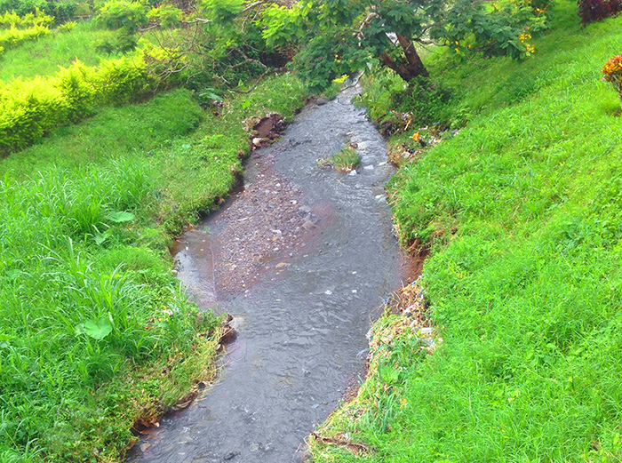

SCP-006

- Item nº:
- SCP-006
- Classe do objeto:
- Safe
Procedimentos Especiais de Contenção:
Embora a natureza do SCP-006 não exija uma contenção extensa, é necessário um certo nível de sigilo sobre a existência e as propriedades do objeto, por motivos óbvios. Os procedimentos a seguir são exigidos não pela segurança do pessoal, mas para negar ou ocultar o conhecimento dos efeitos do SCP-006 às pessoas que interagem com ele.
1: Todo o pessoal que interagir fisicamente com o SCP-006 deve usar trajes BNC Classe VI modificados. Antes de poderem realizar procedimentos, devem receber o briefing do Material SCP-006B ou SCP-006C. O Briefing SCP-006A é o correto e é restrito apenas a quem tem autorização O5. Para garantir que o pessoal está usando os trajes corretamente, eles devem ser submersos em uma piscina de água. Qualquer bolha de ar observada indica um vazamento no traje.
2: Os procedimentos com o SCP-006 devem ser realizados sob vigilância extrema. Em caso de contato com o SCP-006, o comandante responsável anunciará o Procedimento 006-Xi-12, que o pessoal foi instruído a entender como indicação de alta toxicidade, devendo evacuar.
3: Qualquer procedimento em que se obtenha líquido do SCP-006 deve ser aprovado por três (3) funcionários de nível O5. O líquido deve ser transferido em um Contêiner de Selagem Quádrupla e sob guarda armada.
4: Se a qualquer momento o pessoal entrar em contato com o SCP-006 ou com o líquido do SCP-006, deve ser confinado e eliminado depois de realizados estudos suficientes. Devido à natureza do SCP-006, o método de eliminação mais eficaz é a incineração. (Para o relatório completo, ver o arquivo SCP006-TerO5.)
Descrição:
O SCP-006 é uma nascente muito pequena localizada a 60 km a oeste de Astracã. O Comando da Fundação conhecia sua existência desde o século XIX, mas só conseguiu assegurá-la em 1991, por razões políticas. No local da nascente foi construída uma fábrica química como disfarce, com a maioria dos trabalhadores sob controle da Fundação e/ou da Rússia. O líquido emitido pela nascente foi identificado quimicamente em 1902 como simples água mineral, mas possui a propriedade incomum de "saúde".
Ingerir o líquido produz as seguintes propriedades em seres humanos: a capacidade de regenerar o DNA danificado por duplicação excessiva, maior estímulo à duplicação celular, habilidades muito melhoradas de reparo de tecidos danificados e um aumento assustador na eficácia do sistema imunológico humano. Ao testar o líquido em animais, agentes bacterianos e virais hostis foram destruídos imediatamente. Muitos répteis e aves não foram afetados, enquanto primatas superiores tiveram os mesmos benefícios que os humanos.